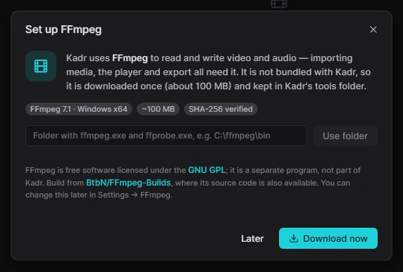

Для людейПочаток4 хв читання
Початок роботи
Від інсталятора до першого проєкту — приблизно п’ять хвилин. Kadr безкоштовний, не потребує облікового запису й працює без інтернету.
1. Отримайте Kadr
Kadr доступний за запрошенням. Інсталятор вам передає людина, яка вас запросила (а для автоматичних оновлень — ще й токен оновлень, див. Оновлення). Файли версії Kadr такі:
| Файл | Що це |
|---|---|
Kadr-Setup-X.Y.Z-x64.exe | Інсталятор — оберіть його. Встановлює Kadr для вашого облікового запису (права адміністратора не потрібні), додає пункт у меню «Пуск» і сам оновлює програму. |
Kadr-X.Y.Z-windows-x64-portable.zip | Портативна версія: розпакуйте й запускайте, нічого не встановлюється. Див. Портативний режим. |
SHA256SUMS.txt | Контрольні суми — щоб переконатися, що файл справжній. |
Якщо ви отримали інсталятор через браузер, він може повідомити, що файл «зазвичай не завантажують». Це лише означає, що Kadr — нова програма. У Microsoft Edge відкрийте меню … біля файлу, оберіть Зберегти, далі Показати більше → Усе одно зберегти (назви пунктів можуть трохи відрізнятися).
2. Встановіть
-
Запустіть інсталятор
Двічі клацніть
Kadr-Setup-…-x64.exeу папці, куди ви його зберегли. -
Пройдіть SmartScreen
Kadr поки не має цифрового підпису, тож Windows може показати синє вікно «Windows protected your PC» («Windows захистив ваш ПК»). Натисніть More info («Докладніше»), а потім Run anyway («Усе одно запустити»). Таке попередження з’являється майже для всіх нових програм від невеликих розробників.
-
Пройдіть кроки інсталятора
Інсталятор має українську мову. Прийміть ліцензію — і Kadr встановиться у вашу папку користувача (
%LOCALAPPDATA%\Programs\Kadr). Дві опції увімкнено за замовчуванням: Створити ярлик на робочому столі та Додати kadrctl і kadr-mcp до PATH. Друга потрібна лише тоді, коли ви плануєте під’єднати ШІ-асистента, але й не заважає. -
Перевірка WebView2
Вікно редактора працює на Microsoft Edge WebView2 — він уже є у Windows 11 і на більшості комп’ютерів із Windows 10. Якщо його бракує, інсталятор запропонує безкоштовне завантаження від Microsoft.
-
Запустіть Kadr
Залиште позначку Запустити Kadr на останній сторінці або відкрийте Kadr пізніше з меню «Пуск».
Хочете впевнитися, що файл справжній? Виконайте в PowerShell Get-FileHash .\Kadr-Setup-X.Y.Z-x64.exe і порівняйте результат із відповідним рядком у SHA256SUMS.txt.
3. Перший запуск: налаштування FFmpeg
Kadr читає й записує відео за допомогою FFmpeg — безкоштовної програми, яка не входить до складу Kadr. Під час першого запуску Kadr шукає FFmpeg і, якщо не знаходить, показує вікно Set up FFmpeg:

- Download now (рекомендовано) — Kadr завантажує FFmpeg 7.1 для Windows (близько 100 МБ), перевіряє цілісність файлу й зберігає його у власній папці інструментів. Коли з’явиться напис FFmpeg is ready, натисніть Continue.
- I have FFmpeg — choose folder — якщо FFmpeg уже є на комп’ютері, вкажіть папку з
ffmpeg.exeіffprobe.exe. FFmpeg, доступний через системнийPATH, Kadr знаходить сам — і тоді це вікно взагалі не з’являється. - Later — закриває вікно. Без FFmpeg не працюватимуть імпорт, перегляд і експорт; налаштувати його можна будь-коли в Settings → FFmpeg.
4. Створіть перший проєкт

-
Створіть проєкт
Натисніть Create project (або Ctrl+N) для звичайного горизонтального відео 16:9. Для TikTok, Reels чи Shorts оберіть Vertical 9:16, для допису в Instagram — Square 1:1. Редактор відкриється одразу. Формат можна змінити пізніше — див. Проєкти.
-
Додайте медіа
На вкладці Media натисніть Import (Ctrl+I) або перетягніть файли з Провідника у вікно. Докладніше — в розділі Імпорт медіа.
-
Покладіть кліпи на таймлайн
Натисніть + на картці медіа або перетягніть її вниз на таймлайн. На головній доріжці кліпи автоматично стають один за одним.
-
Змонтуйте
Поставте курсор відтворення (білу вертикальну лінію) у потрібне місце й натисніть Ctrl+B, щоб розрізати; виділіть зайвий шматок і натисніть Delete. Заголовок додайте з вкладки Text, музику — з Media. Усі деталі — на сторінці Монтаж на таймлайні.
-
Експортуйте
Натисніть Export у правому верхньому куті (Ctrl+E), залиште запропоновані налаштування й ще раз натисніть Export. Готове відео з’явиться в папці Відео →
Kadr. Див. Експорт.
Kadr зберігає кожну зміну миттєво — кнопки «Зберегти» немає. Помилилися? Ctrl+Z скасує останню дію.
Додаткові можливості
Майже все працює одразу після встановлення. Дві «розумні» функції використовують безкоштовні ШІ-моделі, що працюють на вашому комп’ютері, і потребують одноразового налаштування Python:
- Автоматичні субтитри та монтаж за текстом — потрібні Python і faster-whisper. Див. Субтитри → Що потрібно.
- Видалення фону — потрібні Python і rembg. Див. ШІ-інструменти.
Системні вимоги
| Мінімум | Рекомендовано | |
|---|---|---|
| Windows | Windows 10 (версія 1809), 64-розрядна | Windows 11, 64-розрядна |
| Процесор | Будь-який 64-розрядний | 6 ядер і більше |
| Оперативна пам’ять | 4 ГБ | 8 ГБ, для 4K — 16 ГБ |
| Відеокарта | Не обов’язкова | Відеокарта NVIDIA, Intel або AMD пришвидшує експорт |
| Диск | Близько 1 ГБ для Kadr і FFmpeg плюс місце для проєктів | SSD |
| Інтернет | Лише для одноразового завантаження FFmpeg і перевірки оновлень. Монтаж працює офлайн. | |